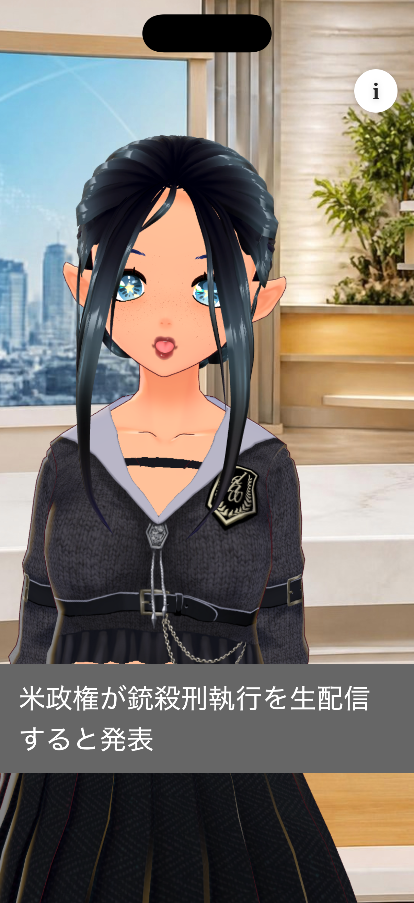
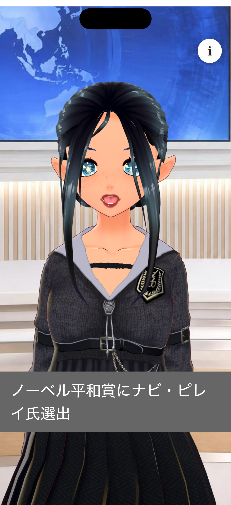
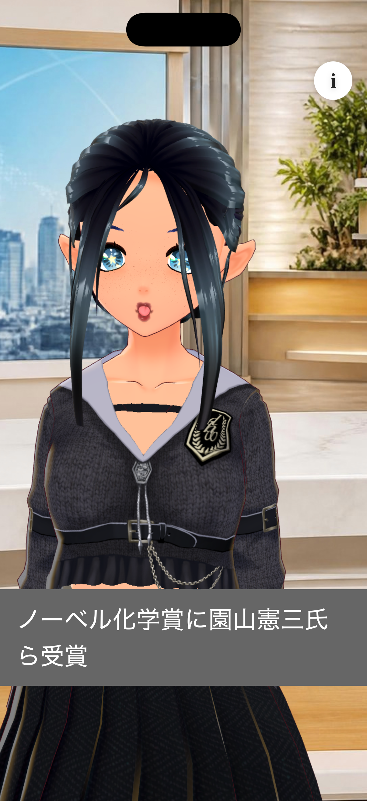

キャスターが読み上げ
画面のアバターが記事を声に出して伝えます。ながら聴きでも、見出しの流れを追いやすくなっています。
AI NEWS CASTER
TJ Newsは、AIキャスターがニュースを声に出して届けるiPhoneアプリです。上下にスワイプするだけで次の記事へ。全文もその場で読めます。
起動すると読み上げが始まります。読み終わると、次の記事へ自動で進みます。
画面のアバターが記事を声に出して伝えます。ながら聴きでも、見出しの流れを追いやすくなっています。
上にスワイプすると次のニュース、下にスワイプすると前のニュースです。最後の次は最初に戻ります。
右上の「i」で記事の本文を表示します。表示中は読み上げを一時停止し、閉じると続きから再開します。
記事が変わると、スタジオの背景も切り替わります。



原稿と読み上げ音声は、AIを用いて作成しています。作成後は、人が内容を確認してから配信しています。アカウント登録は不要です。再生にはインターネット接続が必要です。
ご不明な点、不具合、コンテンツに関するご連絡は、下記メールアドレスまでお願いします。